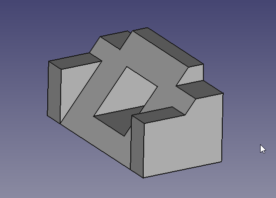
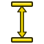
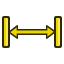
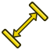

Basic TechDraw Tutorial/es
| Tutorial |
| Topic |
|---|
| Modelado |
| Level |
| Principiante |
| Time to complete |
| Menos de una hora |
| Authors |
| WandererFan |
| FreeCAD version |
| Versión de FreeCAD=0.17 o superior |
| Example files |
| Ejemplo de diseño básico de piezas para la versión 0.17 Ejemplo de tutorial básico de TechDraw |
| See also |
| None |
Introducción
Este tutorial introduce al nuevo usuario a algunas de las herramientas y técnicas utilizadas en el entorno de trabajo de Dibujo Técnico (TechDraw Workbench). Este tutorial no es una guía completa y exhaustiva de este entorno, y muchas de las herramientas y capacidades no aparecen en el mismo. Este Tutorial básico del diseño de piezas le guiará a través de los pasos necesarios para producir dibujos.
Antes de comenzar
Descargue el archivo de muestra del tutorial de diseño de piezas.
La tarea
En este tutorial, utilizará el Entorno de Trabajo de Dibujo Técnico para crear dibujos 2D de la pieza 3D que se muestra a continuación. Crearemos varias vistas de la pieza y añadiremos las dimensiones clave. Como ya se ha comentado, este tutorial no utilizará todas las funciones y herramientas disponibles en este entorno, pero sí las suficientes para que el usuario adquiera una base sólida sobre la cual desarrollar sus conocimientos y habilidades.
La pieza
{kind=link}

Creación de un dibujo
Inicio
- Es posible que desee hacer unos ajustes en la configuración de preferencias antes de comenzar. Consulte la Nota 1.
- Primero, abra el archivo que contiene nuestra pieza 3D. Luego, asegúrese de estar en el Entorno de Trabajo de Dibujo Técnico.
- Seleccionará elementos en la ventana de dibujo o en el panel combinado. La selección en este entorno funciona igual que en la ventana 3D. Los elementos se vuelven amarillos cuando el cursor está en posición de selección y verdes cuando están seleccionados. Para seleccionar varios elementos, mantenga presionada la tecla Ctrl mientras hace clic.
Vistas y dimensiones
Todo el trabajo comienza con una página. Las páginas se basan en plantillas y contienen vistas.
- Haga clic en
 la página predeterminada del Entorno de Trabajo de Dibujo Técnico para crear una nueva página.
la página predeterminada del Entorno de Trabajo de Dibujo Técnico para crear una nueva página. - Haga clic en Cuerpo en la Vista 3D o en la Vista combinada.
- Haga clic en Vista TechDraw. Esto agregará la vista a la página que acabamos de crear.
{kind=link}
Ahora tenemos una vista de la página que muestra la parte superior del cuerpo. Sin embargo, es un poco pequeña.
{kind=link}
- Seleccione Página en la Vista combinada y desplácese hasta la propiedad Escala en la pestaña Datos.
- Cambie la Escala de 1 a 2 y pulse Enter. La vista se ampliará.
- Arrastre la vista fuera del bloque de documentación en la esquina inferior derecha de la página.
{kind=link}
Mejor, pero un poco aburrido. Añadamos algunas dimensiones.
- Seleccione el vértice superior izquierdo (punto pequeño) con el botón izquierdo del ratón (LMB), y luego seleccione también (Ctrl+LMB) el vértice inferior izquierdo.
- Haga clic en

Dimensión vertical del Entorno de Trabajo de Dibujo Técnico. Arrastre el texto de la dimensión fuera del cuerpo. - Repita el proceso con los vértices superior izquierdo y superior derecho y

Dimensión horizontal del Entorno de Trabajo de Dibujo Técnico.
{kind=link}
{kind=link}
{kind=link}
Texto editable
Deberíamos añadir alguna documentación a nuestro dibujo.
- Haga clic en el pequeño cuadrado verde junto a «Título» en el bloque de documentación. Aparecerá una ventana emergente donde podrá cambiar el título por uno más descriptivo.
- Para practicar, introduzca su nombre en el campo «Diseñado por» de la misma manera.
{kind=link}
Vamos a mejorlo. Añadamos algo de texto a la página.
- Haga clic en Anotación del Entorno de Trabajo de Dibjuo Técnico. Aparecerá un bloque de texto en el centro de la página.
- Arrastre el bloque de texto fuera de la vista principal.
- Haga clic en Anotación en la vista combinada y desplácese hasta la propiedad Texto en la pestaña Datos.
- Haga clic en el área de datos y luego en los puntos suspensivos a la derecha del campo. Aparecerá una ventana emergente donde podrá cambiar el texto por algo más descriptivo.
{kind=link}
{kind=link}
Antes de abandonar esta página, veamos cómo quedará al imprimirla.
- Click on TechDraw ToggleFrame. The Vertices and View frames will disappear. You can get them back by clicking Toggle again.
{kind=link}
{kind=link}
Multiple Views of a Single Part
Let's create a multiview drawing using a different Template as a starting point. We'll be using the First Angle convention, but you can change to Third Angle if that is your local convention.
- Click on TechDraw PageTemplate. A file chooser dialog will appear. Select a template file. We're going to use "ANSIB.SVG". A new tab will appear.
- Select "Body" and "Page001" (if you have more than one page in your document, you need to tell TechDraw which one to use).
- Click on TechDraw ProjectionGroup. The familiar small view in the middle of the page will appear and a dialog will appear in the Task panel.
- Click on several boxes in the Secondary Views section of the dialog.
- Drag the View labelled "Front". All the other Views move with it.
- Change the Scale drop down box from Page to Custom and change the Custom Scale to 2:1. Press the OK button.
{kind=link}
{kind=link}
{kind=link}
- In the View labelled "TopLeftFront", select the two Vertices at the extreme ends of the front edge of the work piece.
- Click on

TechDraw LengthDimension. Drag the dimension text away from the Body.
{kind=link}
Linking Dimensions to 3D Model
Do you notice a problem with the dimension we just created?
{kind=link}
From the first part of this tutorial, we know that the work piece is 53 mm wide, but our new dimensions reads 43.27. This is because "TopLeftFront" is an isometric projection, and our first drawing was an orthogonal (multiview) projection. To get the right value, we need to link our dimension directly to the 3D model.
- Note the name of our faulty dimension in the Combo panel. We'll need it in a minute.
- Change to the 3D tab and select the Vertices at the ends of the front edge of the work piece. Also select Page001.
- Click on TechDraw LinkDimension. A dialog will open in the Task panel.
- In the dialog, move our dimension from the Available column to the Selected column. Press OK.
- Return to Page001. Our dimension should now read the correct value of 53. (if you still see 43.27, you may need to press the Recompute button or drag the dimension value a bit until it changes.)
{kind=link}
Going Further
In this tutorial you have learned enough about TechDraw to produce a drawing like this one (by NormandC). See Note 2.
{kind=link}
There is much more functionality in TechDraw for you to explore - Section Views, Detail Views, Svg Symbols, Images, face hatching.
Notes
- There is an excellent set of suggested preferences in this Forum post.
- This drawing was produced in v0.18. It shows dimensions in the proper format for an isometric view. In v0.17 the extension lines will be perpendicular to the edge rather than aligned with the axes.
Additional Resources
- FreeCAD file of this exercise for comparison (made with 0.17) Download
{kind=link}
- Page: New Page, New Page From Template, Update Template Fields, Redraw Page, Print All Pages, Export Page as SVG, Export Page as DXF
- TechDraw Views: New View, Broken View, Section View, Complex Section View, Detail View, Projection Group, Clip Group, Insert SVG, Bitmap Image, Share View, Project Shape
- Views From Other Workbenches: Active View, Draft View, BIM View, Spreadsheet View
- Dimensions: Dimension, Length Dimension, Horizontal Length Dimension, Vertical Length Dimension, Radius Dimension, Diameter Dimension, Angle Dimension, Angle Dimension From 3 Points, Area Annotation, Horizontal Extent Dimension, Vertical Extent Dimension, Repair Dimension References
- Hatching: Image Hatch, Geometric Hatch
- Symbols: Weld Symbol, Surface Finish Symbol, Hole/Shaft Fit
- Stacking: Stack Top, Stack Bottom, Stack Up, Stack Down
- Attributes/Modifications: Select Line Attributes, Cascade Spacing and Delta Distance, Change Line Attributes, Extend Line, Shorten Line, Toggle View Lock, Position Section View, Align Horizontal Chain Dimensions, Align Vertical Chain Dimensions, Align Oblique Chain Dimensions, Cascade Horizontal Dimensions, Cascade Vertical Dimensions, Cascade Oblique Dimensions, Area Annotation, Arc Length Annotation, Customize Format Label
- Centerlines/Threading: Circle Centerlines, Bolt Circle Centerlines, Cosmetic Thread Hole Side View, Cosmetic Thread Hole Bottom View, Cosmetic Thread Bolt Side View, Cosmetic Thread Bolt Bottom View, Cosmetic Intersection Vertices, Offset Vertex, Cosmetic 1 Point Circle, Cosmetic 2 Point Circle, Cosmetic 3 Point Circle, Cosmetic Arc, Cosmetic Parallel Line, Cosmetic Perpendicular Line
- Format/Organize Dimensions Horizontal Chain Dimension, Vertical Chain Dimension, Oblique Chain Dimension, Horizontal Coordinate Dimension, Vertical Coordinate Dimension, Oblique Coordinate Dimension, Horizontal Chamfer Dimension, Vertical Chamfer Dimension, Arc Length Dimension, Insert '⌀' Prefix, Insert '□' Prefix, Insert 'n×' Prefix, Remove Prefix, Increase Decimal Places, Decrease Decimal Places
- Annotations: Text Annotation, Rich Text Annotation, Balloon Annotation, Axonometric Length Dimension
- Add Lines: Leader Line, Centerline on Face, Centerline Between 2 Lines, Centerline Between 2 Points, Cosmetic Line Through 2 points, Edit Line Appearance, Toggle Edge Visibility
- Add Vertices: Cosmetic Vertex, Midpoint Vertices, Quadrant Vertices
- Miscellaneous: Remove Cosmetic Object
- Additional: Line Groups, Templates, Hatching, Geometric dimensioning and tolerancing, Preferences
- Getting started
- Installation: Download, Windows, Linux, Mac, Additional components, Docker, AppImage, Ubuntu Snap
- Basics: About FreeCAD, Interface, Mouse navigation, Selection methods, Object name, Preferences, Workbenches, Document structure, Properties, Help FreeCAD, Donate
- Help: Tutorials, Video tutorials
- Workbenches: Std Base, Assembly, BIM, CAM, Draft, FEM, Inspection, Material, Mesh, OpenSCAD, Part, PartDesign, Points, Reverse Engineering, Robot, Sketcher, Spreadsheet, Surface, TechDraw, Test Framework
- Hubs: User hub, Power users hub, Developer hub